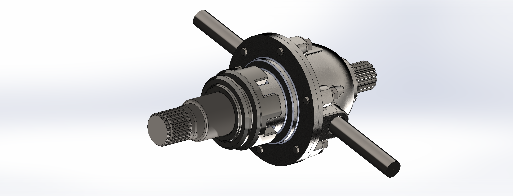
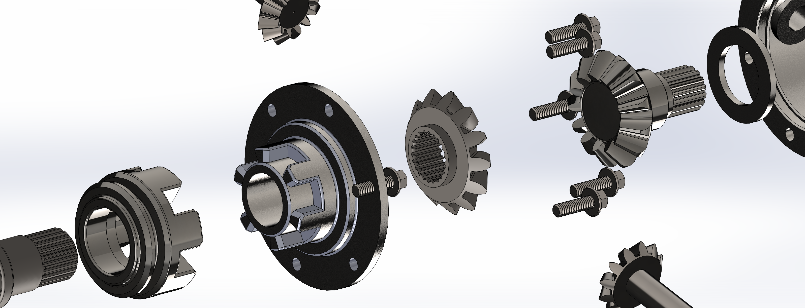

MECHANICAL DESIGN · SOLIDWORKS
Differential Gearbox
This project involved the 3D CAD modelling and assembly of a mechanical differential gearbox using SolidWorks. The assembly consists of multiple mechanical components arranged into a complete gearbox mechanism. The project focuses on individual part modelling, component alignment, assembly relationships and the overall organization of a mechanical system.
01. Final Assembly
The completed assembly brings together the individual components into one mechanical system. Particular attention was given to the positioning and alignment of the shafts, housing and internal components. The final model provides an overall representation of how the components fit together.

02. Modelling Process
The modelling process involved creating the individual components required for the gearbox before combining them into the complete assembly. Each component had to be modelled with consideration for its geometry, position and relationship with the surrounding parts.
Individual Component Design
The assembly required multiple components with different shapes and functions. These parts were developed as individual CAD models before being brought together within the main assembly. Modelling the components separately helped organize the design and made it easier to manage the overall assembly structure.
Assembly Development
After creating the individual components, the parts were inserted into the main assembly. Their positions and orientations were adjusted to establish the intended mechanical arrangement. Assembly relationships were used to position the components relative to one another.
03. Exploded Assembly
The exploded view separates the components to make the assembly structure easier to understand. It provides a clearer view of how the individual components are arranged and how they relate to the complete gearbox.

04. Motion Study
The motion study demonstrates the movement and interaction of the differential gearbox components. The animation provides a visual representation of the mechanical operation and the relationship between the rotating components within the assembly.
05. Design Challenges & Problem Solving
Component Alignment
One important consideration in developing a mechanical assembly is ensuring that the components are positioned correctly relative to one another. The shafts, internal components and housing need to maintain their intended alignment for the assembly to represent a coherent mechanical system.
Managing Assembly Relationships
Another important part of the process was organizing the relationships between individual components. Correct positioning and assembly constraints are important when working with a multi-component mechanical design. This requires understanding how different parts interact within the overall assembly.
Areas for Further Development
Further development could include checking component clearances, evaluating possible interference, refining the engineering drawings and studying the motion of the gearbox mechanism.
06. What I Learned
This project helped develop my understanding of mechanical assembly design and the workflow involved in building a multi-component CAD model. It provided experience in organizing individual components, positioning parts within an assembly and presenting a mechanical system through both complete and exploded views. It also reinforced the importance of planning component geometry and assembly relationships when developing mechanical designs.
07. Project Files
Download the CAD exports and original SolidWorks assembly files below.